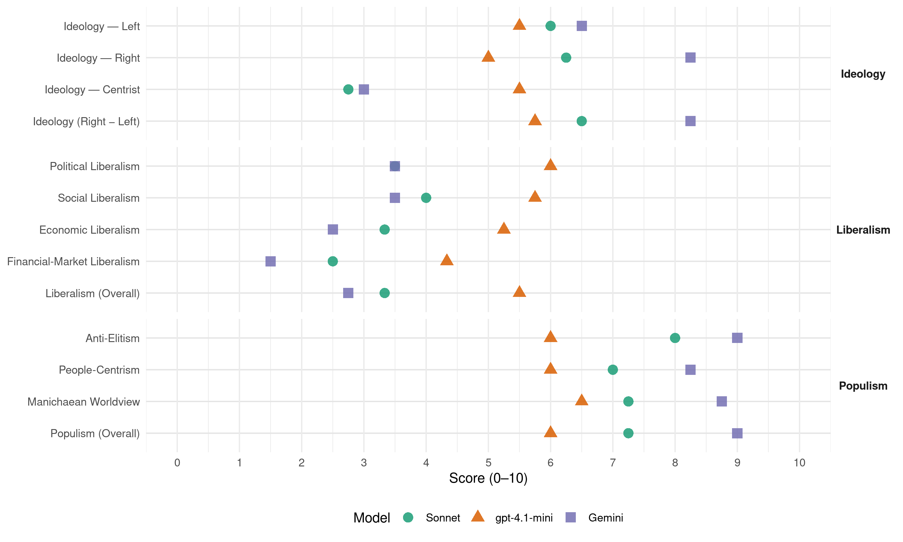

PRONA (Brazil, 1994)
manifesto_id 180710_199410
Get full text: This site shows derived annotations and short verbatim quotes only. The full manifesto text is © Manifesto Project / WZB — obtain it via manifesto-project.wzb.eu using the manifesto_id above.
Headline scores
| Dimension | Sonnet | gpt-4.1-mini | Gemini |
|---|---|---|---|
| Populism (Overall) | 7.2 | 6.0 | 9.0 |
| Anti-Elitism | 8.0 | 6.0 | 9.0 |
| People-Centrism | 7.0 | 6.0 | 8.2 |
| Manichaean Worldview | 7.2 | 6.5 | 8.8 |
| Ideology (Right − Left) | 6.5 | 5.8 | 8.2 |
| Liberalism (Overall) | 3.3 | 5.5 | 2.8 |
| Political Liberalism | 3.5 | 6.0 | 3.5 |
| Social Liberalism | 4.0 | 5.8 | 3.5 |
| Economic Liberalism | 3.3 | 5.2 | 2.5 |
| Financial-Market Liberalism | 2.5 | 4.3 | 1.5 |
Evidence per dimension
Economic Liberalism
Gemini · score 2.0 · verified · chunk 1
“Estado forte, técnico e intervencionista, que privilegie o trabalho”
sem nenhuma função social. O Estado que nós preconizamos é um Estado forte, técnico e intervencionista, que privilegie o trabalho e a produção, em detrimento do capital
Gemini · score 4.0 · verified · chunk 2
“Estado forte, técnico e intervencionista”
A participação do Estado e a privatização. O PRONA defende a existência de um Estado forte, técnico e intervencionista. Isto para que ele possa cumprir suas
Gemini · score 2.0 · verified · chunk 3
“monopólio estatal do petróleo”
preservação da nossa PETROBRÁS, como empresa de economia mista sob o controle do Estado, e do monopólio estatal do petróleo.
Gemini · score 2.0 · verified · chunk 4
“contingenciar preços domésticos”
envolvem a busca dos minerais; contingenciar preços domésticos, quando necessário diferenciá-los das cotações
gpt-4.1-mini · score 4.0 · verified · chunk 1
“Estado forte, técnico e intervencionista, que privilegie o trabalho e a produção”
O Estado que nós preconizamos é um Estado forte, técnico e intervencionista, que privilegie o trabalho e a produção, em detrimento do capital especulativo.
gpt-4.1-mini · score 7.0 · verified · chunk 2
“livre iniciativa, propriedade privada dos meios e fatores de produção e livre jogo das forças de mercado”
…preservadas as premissas da Economia de Mercado (livre iniciativa, propriedade privada dos meios e fatores de produção e livre jogo das forças de mercado), o Estado seja forte, técnico e intervencionista…
gpt-4.1-mini · score 4.0 · verified · chunk 3
“o PRONA considera o setor energético altamente estratégico e, por esse motivo, mante-lo-á sob a responsabiliade exclusiva do Poder Público”
PRONA considera o setor energético altamente estratégico e, por esse motivo, mante-lo-á sob a responsabiliade exclusiva do Poder Público. Não obstante tal concepção básica, os grupos privados, grandes consumidores de energia elétrica, poderão se habilitar a construir, com recursos próprios, usinas hidrelétricas de grande porte.
gpt-4.1-mini · score 6.0 · verified · chunk 4
“diminuindo as taxas de juros reais, diminuindo a tributação das empresas”
O Estado fará um investimento maciço na produção, diminuindo as taxas de juros reais, diminuindo a tributação das empresas, fazendo com que o capital se desvie naturalmente da atividade especulativa para a atividade produtiva.
Sonnet · score 3.0 · verified · chunk 1
“soprado pelos ventos do neoliberalismo econômico”
como um navio sem rumo, soprado pelos ventos do neoliberalismo econômico, cada um entregue à sua própria sorte, não chegaremos a lugar nenhum
Sonnet · score 4.0 · verified · chunk 2
“livre iniciativa, propriedade privada dos meios e fatores de produção e livre jogo das forças de mercado”
preservadas as premissas da Economia de Mercado (livre iniciativa, propriedade privada dos meios e fatores de produção e livre jogo das forças de mercado), o Estado seja forte, técnico e intervencionista
Sonnet · score 3.0 · verified · chunk 3
“setor energético altamente estratégico…sob a responsabilidade exclusiva do Poder Público”
PRONA considera o setor energético altamente estratégico e, por esse motivo, mante-lo-á sob a responsabilidade exclusiva do Poder Público.
Sonnet · score 5.0 · mixed · chunk 4
“diminuindo as taxas de juros reais, diminuindo a tributação”
O Estado fará um investimento maciço na produção, diminuindo as taxas de juros reais, diminuindo a tributação das empresas, fazendo com que o capital se desvie naturalmente da atividade especulativa para a atividade produtiva
Financial-Market Liberalism
Gemini · score 1.0 · verified · chunk 1
“redução drástica das taxas de juros reais”
investimentos produtivos com o desestímulo à atividade especulativa — redução drástica das taxas de juros reais, criar uma distribuição de renda que permita
Gemini · score 3.0 · verified · chunk 2
“imposto provisório sobre movimentação financeira”
imposto predial, territorial urbano e imposto territorial rural — MUNICÍPIOS. imposto provisório sobre movimentação financeira — 0,25% para teste, objetivando calcular
Gemini · score 1.0 · verified · chunk 3
“especuladores recebem, sem fazer nada”
em 1 mês e meio os especuladores recebem, sem fazer nada, sem sair de casa, tudo aquilo que foi gasto com o Serviço
Gemini · score 1.0 · verified · chunk 4
“diminuição da taxa de juros reais”
distribuição de renda obtida a partir da diminuição dos custos de produção, fundamentalmente diminuição da taxa de juros reais e da tributação
gpt-4.1-mini · score 3.0 · verified · chunk 1
“Sistema Financeiro Nacional que, naturalmente, está de mãos dadas com o Sistema Financeiro Internacional”
…foram pagos, apenas no mês da implantação do Plano Real, fabulosos 4,5 bilhões de dólares aos verdadeiros “donos da nação”, àqueles que dominam o Sistema Financeiro Nacional que, naturalmente, está de mãos dadas com o Sistema Financeiro Internacional.
gpt-4.1-mini · score 6.0 · verified · chunk 2
“Defende ainda a definição prévia dos setores que devem ser privatizados, num projeto nacional de desenvolvimento, balizado pelo interesse nacional e por visão estratégica”
…Defende ainda a definição prévia dos setores que devem ser privatizados, num projeto nacional de desenvolvimento, balizado pelo interesse nacional e por visão estratégica e não por razões de ocasião.
gpt-4.1-mini · score 4.0 · verified · chunk 4
“serviço da dívida interna está sendo de 4 bilhões de dólares ao mês”
Apesar de raramente a imprensa mencionar a sangria que representa o serviço da dívida interna, recentemente, no dia 21.07.94, o jornal O Globo confirmou aquilo que nós, do PRONA, vimos afirmando: o custo da dívida interna está sendo de 4 bilhões de dólares ao mês, ou seja, em 1 mês e meio os especuladores recebem, sem fazer nada, sem sair de casa, tudo aquilo que foi gasto com o Serviço de Saúde durante todo o ano de 1993.
Sonnet · score 2.0 · verified · chunk 1
“Sistema Financeiro abocanhou, na década passada”
não se revela à população, que o Sistema Financeiro abocanhou, na década passada, dos cofres públicos, a cifra astronômica de 100 bilhões de dólares
Sonnet · score 4.0 · verified · chunk 2
“imposto único sobre transações - IUT”
A5) Criar um imposto único sobre transações - IUT - no valor de 2% para o credor e 2% para o devedor, à exceção dos saques e depósitos, que pagariam 4%
Sonnet · score 2.0 · verified · chunk 3
“custo da dívida interna está sendo de 4 bilhões de dólares ao mês”
o custo da dívida interna está sendo de 4 bilhões de dólares ao mês, ou seja, em 1 mês e meio os especuladores recebem, sem fazer nada, sem sair de casa, tudo aquilo que foi gasto com o Serviço de Saúde
Sonnet · score 2.0 · verified · chunk 4
“a especulação financeira arranca da nação”
a especulação financeira arranca da nação, em cifras de julho de 1994, alguma coisa entre 4 e 6 bilhões de dólares — quando se computa tudo o que é pago como serviço da dívida interna
Political Liberalism
Gemini · score 3.0 · verified · chunk 1
“a tão decantada democracia brasileira está a serviço das alienadas elites”
advento de um Brasil melhor. Além disso pouco poderemos acrescentar, porque a tão decantada democracia brasileira está a serviço das alienadas elites dirigentes, desde que aos renovadores concede
Gemini · score 5.0 · verified · chunk 2
“Minimizar o potencial de conflito entre os poderes executivo e legislativo”
PRIORIZAR A REVISÃO DO ESTADO. Dl) Minimizar o potencial de conflito entre os poderes executivo e legislativo, em especial na forma de suas investiduras.
Gemini · score 4.0 · verified · chunk 3
“recursos jurídicos de que pode lançar mão”
Contém, em seus artigos 220 e 221, aí embutidos, de modo claro, os recursos jurídicos de que pode lançar mão um governo
Gemini · score 2.0 · verified · chunk 4
“muda o modelo político vigente”
retrato fiel da situação da Saúde no país. Ou se muda o modelo político vigente, da falta de autoridade
gpt-4.1-mini · score 6.0 · verified · chunk 1
“democracia brasileira está a serviço das alienadas elites dirigentes”
…a tão decantada democracia brasileira está a serviço das alienadas elites dirigentes, desde que aos renovadores concede espaços e tempos mínimos, suficientes apenas para declinar nomes…
gpt-4.1-mini · score 7.0 · verified · chunk 2
“O PRONA defende a existência de um Estado forte, técnico e intervencionista”
…O PRONA defende a existência de um Estado forte, técnico e intervencionista. Isto para que ele possa cumprir suas obrigações, como, por exemplo, prover o atendimento das necessidades coletivas da população (energia, transportes, comunicações, saúde, saneamento, educação, segurança e outros).
gpt-4.1-mini · score 6.0 · verified · chunk 3
“Reza a Carta Magna, no seu artigo 223, que compete ao Poder Executivo outorgar e renovar concessão”
O PRONA tem coragem de definir um processo claro de atuação direta nos meios de comunicação de massa. Reza a Carta Magna, no seu artigo 223, que compete ao Poder Executivo outorgar e renovar concessão, permissão e autorização para o serviço de radiodifusão sonora e de sons e imagens, observado o princípio da complementaridade dos sistemas privado, público e estatal.
gpt-4.1-mini · score 5.0 · verified · chunk 4
“poder central e executadas em todas as unidades básicas de saúde”
Centralização doutrinária — as ações básicas de saúde serão as mesmas em todo o país, determinadas pelo poder central e executadas em todas as unidades básicas de saúde (vacinação, incentivo ao aleitamento materno etc).
Sonnet · score 3.0 · verified · chunk 1
“a tão decantada democracia brasileira está a serviço”
a tão decantada democracia brasileira está a serviço das alienadas elites dirigentes, desde que aos renovadores concede espaços e tempos mínimos, suficientes apenas para declinar nomes
Sonnet · score 5.0 · verified · chunk 2
“Minimizar o potencial de conflito entre os poderes”
Dl) Minimizar o potencial de conflito entre os poderes executivo e legislativo, em especial na forma de suas investiduras.
Sonnet · score 3.0 · verified · chunk 3
“O PRONA tem coragem de definir um processo claro de atuação direta nos meios de comunicação”
O PRONA tem coragem de definir um processo claro de atuação direta nos meios de comunicação de massa. Reza a Carta Magna, no seu artigo 223, que compete ao Poder Executivo outorgar e renovar concessão
Sonnet · score 3.0 · verified · chunk 4
“Ou se muda o modelo político vigente”
Ou se muda o modelo político vigente, da falta de autoridade, da falta de ordem, da desordem generalizada da qual tudo decorre
Liberalism (Overall)
Gemini · score 3.0 · verified · chunk 1
“Estado forte, técnico e intervencionista, que privilegie o trabalho”
sem nenhuma função social. O Estado que nós preconizamos é um Estado forte, técnico e intervencionista, que privilegie o trabalho e a produção, em detrimento do capital
Gemini · score 4.0 · verified · chunk 2
“Estado forte, técnico e intervencionista”
A participação do Estado e a privatização. O PRONA defende a existência de um Estado forte, técnico e intervencionista. Isto para que ele possa cumprir suas
Gemini · score 2.0 · verified · chunk 3
“Estado forte, técnico e intervencionista”
O Estado forte, técnico e intervencionista, viga mestra do PRONA, vai colocar ordem na casa
Gemini · score 2.0 · verified · chunk 4
“contingenciar preços domésticos”
envolvem a busca dos minerais; contingenciar preços domésticos, quando necessário diferenciá-los das cotações
gpt-4.1-mini · score 5.0 · verified · chunk 1
“Estado forte, técnico e intervencionista, que privilegie o trabalho e a produção”
O Estado que nós preconizamos é um Estado forte, técnico e intervencionista, que privilegie o trabalho e a produção, em detrimento do capital especulativo.
gpt-4.1-mini · score 7.0 · verified · chunk 2
“O PRONA defende a existência de um Estado forte, técnico e intervencionista”
…O PRONA defende a existência de um Estado forte, técnico e intervencionista. Isto para que ele possa cumprir suas obrigações, como, por exemplo, prover o atendimento das necessidades coletivas da população (energia, transportes, comunicações, saúde, saneamento, educação, segurança e outros).
gpt-4.1-mini · score 5.0 · verified · chunk 3
“Reza a Carta Magna, no seu artigo 223, que compete ao Poder Executivo outorgar e renovar concessão”
O PRONA tem coragem de definir um processo claro de atuação direta nos meios de comunicação de massa. Reza a Carta Magna, no seu artigo 223, que compete ao Poder Executivo outorgar e renovar concessão, permissão e autorização para o serviço de radiodifusão sonora e de sons e imagens, observado o princípio da complementaridade dos sistemas privado, público e estatal.
gpt-4.1-mini · score 5.0 · verified · chunk 4
“diminuindo as taxas de juros reais, diminuindo a tributação das empresas”
O Estado fará um investimento maciço na produção, diminuindo as taxas de juros reais, diminuindo a tributação das empresas, fazendo com que o capital se desvie naturalmente da atividade especulativa para a atividade produtiva.
Sonnet · score 3.0 · verified · chunk 1
“Estado forte, técnico e intervencionista”
O Estado com o PRONA no poder será um Estado forte, técnico e intervencionista, voltado para o bem-estar de toda a sociedade brasileira
Sonnet · score 4.0 · verified · chunk 2
“livre iniciativa, propriedade privada dos meios e fatores de produção”
preservadas as premissas da Economia de Mercado (livre iniciativa, propriedade privada dos meios e fatores de produção e livre jogo das forças de mercado)
Sonnet · score 3.0 · verified · chunk 3
“O PRONA não vai tolher a livre iniciativa, vai apenas exigir que ela seja de qualidade”
O PRONA não vai tolher a livre iniciativa, vai apenas exigir que ela seja de qualidade. A função do estado é garantir a educação para todos, em todos os níveis
Sonnet · score 4.0 · mixed · chunk 4
“a liberdade de iniciativa, aliás como manda a Carta Magna”
Como a filosofia do PRONA consagra a liberdade de iniciativa, aliás como manda a Carta Magna, além dos controles acima, são aceitas programaticamente as seguintes interferências do Poder Público no setor
Anti-Elitism
Gemini · score 9.0 · verified · chunk 1
“profunda aversão que sinto pelos que hoje fazem da Política sua profissão”
Carlos de Andrada Serpa, à Presidência da República, e a profunda aversão que sinto pelos que hoje fazem da Política sua profissão, uma vez que esse pequeno segmento da população mostra sinais
Gemini · score 8.0 · verified · chunk 2
“para proteger os poderosos desta terra”
números e do “papel pintado”, mesmo que falsos, para proteger os poderosos desta terra e do exterior. Os primeiros não têm qualquer compromisso
Gemini · score 9.0 · verified · chunk 3
“tecnocratas e os políticos que dirigem com prepotência”
Lamentavelmente, os tecnocratas e os políticos que dirigem com prepotência o País ignoram tudo isso sobre energia
Gemini · score 10.0 · verified · chunk 4
“essa caterva de profissionais da política”
preparados, preocupados com o povo, e não constituídos por essa caterva de profissionais da política, que só aprenderam
gpt-4.1-mini · score 8.0 · verified · chunk 1
“não tolera os enganadores, corruptos, marginais e traidores da Pátria”
…a maioria do povo brasileiro, maioria até agora silenciosa, não tolera os enganadores, corruptos, marginais e traidores da Pátria que se enquistaram no Poder e, por esse motivo, estão levando a Terra da Promissão à ruína material e à degradação moral.
gpt-4.1-mini · score 6.0 · verified · chunk 2
“O PRONA não é contra ela em si, mas sim condena a forma como está sendo feita, com o”sucateamento” de empresas vendidas abaixo do seu valor real”
…não é contra ela em si, mas sim condena a forma como está sendo feita, com o “sucateamento” de empresas vendidas abaixo do seu valor real, através de avaliações duvidosas, leilões combinados, utilização de “moedas podres” por quem as comprou na baixa e utilizou com o valor de face, apurando valores reais irrisórios. Defende ainda a definição prévia dos setores que devem ser privatizados…
gpt-4.1-mini · score 3.0 · verified · chunk 3
“os tecnocratas e os políticos que dirigem com prepotência o País ignoram tudo isso”
Lamentavelmente, os tecnocratas e os políticos que dirigem com prepotência o País ignoram tudo isso sobre energia, que é a base de tudo. Eles só cuidam do controle dos números e do “papel pintado”, mesmo que falsos, para proteger os poderosos desta terra e do exterior.
gpt-4.1-mini · score 7.0 · verified · chunk 4
“patifes que, com um sorriso estampado no rosto, defendem os interesses estrangeiros no Brasil”
Basta, para isso, que sejam afastados os inimigos da pátria, os traidores do povo, os patifes que, com um sorriso estampado no rosto, defendem os interesses estrangeiros no Brasil, acorrentando o nosso povo nos grilhões de uma escravidão secular.
Sonnet · score 9.0 · verified · chunk 1
“a tão decantada democracia brasileira está a serviço das alienadas elites dirigentes”
Além disso pouco poderemos acrescentar, porque a tão decantada democracia brasileira está a serviço das alienadas elites dirigentes, desde que aos renovadores concede espaços e tempos mínimos
Sonnet · score 6.0 · verified · chunk 2
“tecnocratas e os políticos que dirigem com prepotência”
os tecnocratas e os políticos que dirigem com prepotência o País ignoram tudo isso sobre energia, que é a base de tudo. Eles só cuidam do controle dos números
Sonnet · score 8.0 · verified · chunk 3
“tecnocratas e os políticos que dirigem com prepotência o País ignoram tudo isso”
Lamentavelmente, os tecnocratas e os políticos que dirigem com prepotência o País ignoram tudo isso sobre energia, que é a base de tudo. Eles só cuidam do controle dos números e do “papel pintado”
Sonnet · score 9.0 · verified · chunk 4
“essa caterva de profissionais da política”
constituídos por essa caterva de profissionais da política, que só aprenderam, transitando nos corredores do Congresso Nacional, a fazer acordos para salvaguardar os seus próprios interesses
Ideology — Centrist
Gemini · score 3.0 · verified · chunk 3
“respeitem o povo, a quem deveriam servir”
classe política homens dignos e de coragem que se dêem a respeitar e respeitem o povo, a quem deveriam servir.
gpt-4.1-mini · score 5.0 · verified · chunk 1
“maioria do povo brasileiro, maioria até agora silenciosa”
Confiamos na vitória, ainda assim, porque sabemos que a maioria do povo brasileiro, maioria até agora silenciosa, não tolera os enganadores, corruptos, marginais e traidores da Pátria…
gpt-4.1-mini · score 6.0 · verified · chunk 2
“preservadas as premissas da Economia de Mercado (livre iniciativa, propriedade privada dos meios e fatores de produção e livre jogo das forças de mercado)”
…Somos a favor de uma terceira via, em que, preservadas as premissas da Economia de Mercado (livre iniciativa, propriedade privada dos meios e fatores de produção e livre jogo das forças de mercado), o Estado seja forte, técnico e intervencionista…
gpt-4.1-mini · score 6.0 · verified · chunk 3
“Reunindo competência, honestidade e espírito público, o PRONA fará reverter à população todos os benefícios”
Isso porque o espaço brasileiro é privilegiado, tanto pela posição relativa que ocupa, quanto pelos dotes naturais com que foi brindado pelo Criador. Reunindo competência, honestidade e espírito público, o PRONA fará reverter à população todos os benefícios que esta terra abençoada podé proporcionar.
gpt-4.1-mini · score 5.0 · verified · chunk 4
“unir, rua com rua, bairro com bairro, cidade com cidade, estado com estado”
É hora de unir, não de desunir. Vamos nos unir, todos nós, cidadãos comuns da nossa terra… rua com rua, bairro com bairro, cidade com cidade, estado com estado, todos falando a mesma língua, a língua de uma grande nação.
Sonnet · score 2.0 · verified · chunk 1
“O PRONA não é socialista, mas defende a justiça social”
O PRONA não é socialista, mas defende a justiça social e afirma que só um Estado ativo é capaz de garantir as premissas da Economia de Mercado
Sonnet · score 3.0 · verified · chunk 2
“Somos a favor de uma terceira via”
Não somos internacionalistas, não aceitamos nem o neoliberalismo… nem o marxismo… Somos a favor de uma terceira via
Sonnet · score 3.0 · verified · chunk 3
“O Estado forte, técnico e intervencionista, viga mestra do PRONA”
O Estado forte, técnico e intervencionista, viga mestra do PRONA, vai colocar ordem na casa, resgatando a formidável chaga social da sociedade brasileira.
Sonnet · score 3.0 · verified · chunk 4
“Vamos nos unir, todos nós, cidadãos comuns”
Vamos nos unir, todos nós, cidadãos comuns da nossa terra, que estivemos até agora observando a História
Ideology — Left
Gemini · score 7.0 · verified · chunk 1
“guerra total ao modelo concentrador de renda injusto, impiedoso, desumano”
se precisarem dos nossos minerais, que paguem o preço justo ! Vamos declarar guerra total ao modelo concentrador de renda injusto, impiedoso, desumano que aí está
Gemini · score 7.0 · verified · chunk 2
“não é socialista, mas defende a justiça social”
funções. O PRONA não é socialista, mas defende a justiça social e afirma que só um Estado ativo é capaz de
Gemini · score 7.0 · verified · chunk 3
“monopólio estatal do petróleo e a PETROBRÁS”
necessitamos garantir, a qualquer custo, o monopólio estatal do petróleo e a PETROBRÁS sob o controle do Estado brasileiro
Gemini · score 5.0 · verified · chunk 4
“especuladores recebem, sem fazer nada”
no dia 21.07.94, o jornal O Globo confirmou aquilo que nós, do PRONA, vimos afirmando: o custo da dívida interna está sendo de 4 bilhões de dólares ao mês, ou seja, em 1 mês e meio os especuladores recebem, sem fazer nada, sem sair de casa
gpt-4.1-mini · score 6.0 · verified · chunk 1
“guerra total ao modelo concentrador de renda injusto, impiedoso, desumano”
Vamos declarar guerra total ao modelo concentrador de renda injusto, impiedoso, desumano que aí está, onde o segmento formado pelos mais abonados, somente 1 % da população economicamente ativa, aufere renda igual à dos 60% menos abonados.
gpt-4.1-mini · score 6.0 · verified · chunk 2
“defende a justiça social e afirma que só um Estado ativo é capaz de garantir as premissas da Economia de Mercado”
…O PRONA não é socialista, mas defende a justiça social e afirma que só um Estado ativo é capaz de garantir as premissas da Economia de Mercado: livre iniciativa, propriedade privada dos meios e fatores de produção e livre jogo das forças de mercado.
gpt-4.1-mini · score 4.0 · verified · chunk 3
“os poderosos desta terra e do exterior”
Eles só cuidam do controle dos números e do “papel pintado”, mesmo que falsos, para proteger os poderosos desta terra e do exterior.
gpt-4.1-mini · score 6.0 · verified · chunk 4
“mais produção, crescimento econômico, mais emprego, melhores salários, melhor distribuição de renda”
O Estado fará um investimento maciço na produção, diminuindo as taxas de juros reais, diminuindo a tributação das empresas, fazendo com que o capital se desvie naturalmente da atividade especulativa para a atividade produtiva. Mais produção, crescimento econômico, mais emprego, melhores salários, melhor distribuição de renda, redução da pobreza, melhoria geral na saúde da população.
Sonnet · score 7.0 · verified · chunk 1
“guerra total ao modelo concentrador de renda injusto”
Vamos declarar guerra total ao modelo concentrador de renda injusto, impiedoso, desumano que aí está, onde o segmento formado pelos mais abonados, somente 1 % da população economicamente ativa, aufere renda igual à dos 60% menos abonados
Sonnet · score 4.0 · verified · chunk 2
“justiça social e afirma que só um Estado ativo”
O PRONA não é socialista, mas defende a justiça social e afirma que só um Estado ativo é capaz de garantir as premissas da Economia de Mercado
Sonnet · score 6.0 · verified · chunk 3
“monopólio estatal do petróleo e a PETROBRÁS sob o controle do Estado”
necessitamos garantir, a qualquer custo, o monopólio estatal do petróleo e a PETROBRÁS sob o controle do Estado brasileiro, sem irresponsáveis parcerias e outras malandragens.
Sonnet · score 7.0 · verified · chunk 4
“os especuladores recebem, sem fazer nada”
em 1 mês e meio os especuladores recebem, sem fazer nada, sem sair de casa, tudo aquilo que foi gasto com o Serviço de Saúde durante todo o ano de 1993
Ideology (Right − Left)
Gemini · score 8.0 · verified · chunk 1
“programa do PRONA é nacionalista”
revelar a origem dos recursos que irão financiar as respectivas candidaturas. Pois bem, o programa do PRONA é nacionalista, como deveriam ser todos os programas partidários
Gemini · score 8.0 · verified · chunk 2
“Não somos internacionalistas, não aceitamos nem o neoliberalismo”
Poder Nacional. Não somos internacionalistas, não aceitamos nem o neoliberalismo, que privilegia as nações mais poderosas (G-7
Gemini · score 8.0 · verified · chunk 3
“Pátria, por isso não reconhecem o nosso povo”
Para eles não existe a Pátria, por isso não reconhecem o nosso povo como compatriotas.
Gemini · score 9.0 · verified · chunk 4
“traidores do povo, os patifes”
afastados os inimigos da pátria, os traidores do povo, os patifes que, com um sorriso estampado
gpt-4.1-mini · score 6.0 · verified · chunk 1
“guerra total ao modelo concentrador de renda injusto, impiedoso, desumano”
Vamos declarar guerra total ao modelo concentrador de renda injusto, impiedoso, desumano que aí está, onde o segmento formado pelos mais abonados, somente 1 % da população economicamente ativa, aufere renda igual à dos 60% menos abonados.
gpt-4.1-mini · score 6.0 · verified · chunk 2
“defende a justiça social e afirma que só um Estado ativo é capaz de garantir as premissas da Economia de Mercado”
…O PRONA não é socialista, mas defende a justiça social e afirma que só um Estado ativo é capaz de garantir as premissas da Economia de Mercado: livre iniciativa, propriedade privada dos meios e fatores de produção e livre jogo das forças de mercado.
gpt-4.1-mini · score 5.0 · verified · chunk 3
“os tecnocratas e os políticos que dirigem com prepotência o País ignoram tudo isso”
Lamentavelmente, os tecnocratas e os políticos que dirigem com prepotência o País ignoram tudo isso sobre energia, que é a base de tudo. Eles só cuidam do controle dos números e do “papel pintado”, mesmo que falsos, para proteger os poderosos desta terra e do exterior.
gpt-4.1-mini · score 6.0 · verified · chunk 4
“patifes que, com um sorriso estampado no rosto, defendem os interesses estrangeiros no Brasil”
Basta, para isso, que sejam afastados os inimigos da pátria, os traidores do povo, os patifes que, com um sorriso estampado no rosto, defendem os interesses estrangeiros no Brasil, acorrentando o nosso povo nos grilhões de uma escravidão secular.
Sonnet · score 8.0 · verified · chunk 1
“Independência Econômica do Brasil”
a conquista, no próximo período presidencial, da Independência Econômica do Brasil, passados mais de 172 anos desde a autonomia política
Sonnet · score 5.0 · verified · chunk 2
“não aceitamos nem o neoliberalismo… nem o marxismo”
Não somos internacionalistas, não aceitamos nem o neoliberalismo, que privilegia as nações mais poderosas (G-7), nem o marxismo e suas derivações
Sonnet · score 6.0 · verified · chunk 3
“grandes corporações de petróleo norte-americanas, garantidas por forças militares”
Os donos são as grandes corporações de petróleo norte-americanas, garantidas por forças militares dos Estados Unidos da América que têm o poder nuclear.
Sonnet · score 7.0 · verified · chunk 4
“inimigos da pátria, os traidores do povo”
sejam afastados os inimigos da pátria, os traidores do povo, os patifes que, com um sorriso estampado no rosto, defendem os interesses estrangeiros no Brasil
Ideology — Right
Gemini · score 8.0 · verified · chunk 1
“manter a maiòr região natural do Brasil sob sua soberania indiscutível”
demonstrando a firme disposição dos brasileiros em manter a maiòr região natural do Brasil sob sua soberania indiscutível e para proveito exclusivo dos que residem no
Gemini · score 8.0 · verified · chunk 2
“Não somos internacionalistas, não aceitamos nem o neoliberalismo”
Poder Nacional. Não somos internacionalistas, não aceitamos nem o neoliberalismo, que privilegia as nações mais poderosas (G-7
Gemini · score 8.0 · verified · chunk 3
“desrespeitar a própria nacionalidade”
A língua é o maior de todos os patrimônios de um povo. Desrespeitá-la é desrespeitar a própria nacionalidade.
Gemini · score 9.0 · verified · chunk 4
“defender o que é nosso”
caminha em sentido contrário a toda essa farsa. Vamos defender o que é nosso! Vamos ocupar racionalmente a Amazônia
gpt-4.1-mini · score 6.0 · verified · chunk 1
“defender sua soberania e dar o grito de Independência Econômica”
…já é hora de o Brasil deixar de curvar-se, defender sua soberania e dar o grito de Independência Econômica, uma vez que tem tudo para ser a maior nação do terceiro milênio…
gpt-4.1-mini · score 5.0 · verified · chunk 2
“não somos internacionalistas, não aceitamos nem o neoliberalismo, que privilegia as nações mais poderosas (G-7)”
…Não somos internacionalistas, não aceitamos nem o neoliberalismo, que privilegia as nações mais poderosas (G-7), nem o marxismo e suas derivações, que se revelaram ineficazes na recente e atual história econômica mundial.
gpt-4.1-mini · score 3.0 · verified · chunk 3
“a violência contra as soberanias nacionais da maioria dos povos”
Daí a violência contra as soberanias nacionais da maioria dos povos com os resultados da Rodada Uruguai do GATT.
gpt-4.1-mini · score 6.0 · verified · chunk 4
“defender os interesses estrangeiros no Brasil, acorrentando o nosso povo nos grilhões de uma escravidão secular”
Basta, para isso, que sejam afastados os inimigos da pátria, os traidores do povo, os patifes que, com um sorriso estampado no rosto, defendem os interesses estrangeiros no Brasil, acorrentando o nosso povo nos grilhões de uma escravidão secular.
Sonnet · score 8.0 · verified · chunk 1
“programa do PRONA é nacionalista”
Pois bem, o programa do PRONA é nacionalista, como deveriam ser todos os programas partidários, e o seu candidato, Doutor Enéas Ferreira Carneiro, um patriota exemplar
Sonnet · score 5.0 · verified · chunk 2
“autônoma e soberana, onde o brasileiro tenha orgulho”
numa nação rica e poderosa, que não seja caudatária de ninguém, autônoma e soberana, onde o brasileiro tenha orgulho de sê-lo.
Sonnet · score 6.0 · verified · chunk 3
“imensos espaços abertos à cobiça estrangeira”
Há ainda o problema crucial de termos que ocupar os imensos espaços abertos à cobiça estrangeira.
Sonnet · score 6.0 · verified · chunk 4
“protegendo-a dos alienígenas”
Vamos ocupar racionalmente a Amazônia, protegendo-a dos alienígenas, tamponando todas as vias de acesso ao seu interior
Manichaean Worldview
Gemini · score 9.0 · verified · chunk 1
“enganadores, corruptos, marginais e traidores da Pátria que se enquistaram no Poder”
silenciosa, não tolera os enganadores, corruptos, marginais e traidores da Pátria que se enquistaram no Poder e, por esse motivo, estão levando a Terra da
Gemini · score 7.0 · verified · chunk 2
“para resolver o bem-estar de outros povos e o poderio de suas nações às custas da nossa miséria”
estão aqui para explorar o máximo, para resolver o bem-estar de outros povos e o poderio de suas nações às custas da nossa miséria, do nosso desespero.
Gemini · score 9.0 · verified · chunk 3
“proteger os poderosos desta terra e do exterior”
Eles só cuidam do controle dos números e do “papel pintado”, mesmo que falsos, para proteger os poderosos desta terra e do exterior.
Gemini · score 10.0 · verified · chunk 4
“defendê-la desses abutres”
de fato, possa representá-la realmente, e defendê-la desses abutres. 23 - UM ENSAIO SOBRE
gpt-4.1-mini · score 7.0 · verified · chunk 1
“enganadores, corruptos, marginais e traidores da Pátria”
…não tolera os enganadores, corruptos, marginais e traidores da Pátria que se enquistaram no Poder e, por esse motivo, estão levando a Terra da Promissão à ruína material e à degradação moral.
gpt-4.1-mini · score 5.0 · verified · chunk 2
“São servis com os poderosos, insaciáveis para seu próprio benefício e prepotentes para com o povo”
…não reconhecem o nosso povo como compatriotas. Os segundos estão aqui para explorar o máximo, para resolver o bem-estar de outros povos e o poderio de suas nações às custas da nossa miséria, do nosso desespero. E tudo isto porque o Brasil não tem à frente do seu governo e na classe política homens dignos e de coragem… São servis com os poderosos, insaciáveis para seu próprio benefício e prepotentes para com o povo.
gpt-4.1-mini · score 7.0 · verified · chunk 3
“Os donos são as grandes corporações de petróleo norte-americanas, garantidas por forças militares dos Estados Unidos”
A Arábia Saudita tem muito petróleo em seu território mas não é dona dele. Os donos são as grandes corporações de petróleo norte-americanas, garantidas por forças militares dos Estados Unidos da América que têm o poder nuclear.
gpt-4.1-mini · score 7.0 · verified · chunk 4
“inimigos da pátria, os traidores do povo, os patifes”
Basta, para isso, que sejam afastados os inimigos da pátria, os traidores do povo, os patifes que, com um sorriso estampado no rosto, defendem os interesses estrangeiros no Brasil, acorrentando o nosso povo nos grilhões de uma escravidão secular.
Sonnet · score 9.0 · verified · chunk 1
“súcia de oportunistas, aproveitadores, gatunos e traidores da pátria”
a ascensão de homens virtuosos, em substituição à súcia de oportunistas, aproveitadores, gatunos e traidores da pátria, que vêm ocupando as posições de mando no País
Sonnet · score 5.0 · verified · chunk 2
“São servis com os poderosos, insaciáveis para seu próprio benefício”
São servis com os poderosos, insaciáveis para seu próprio benefício e prepotentes para com o povo. Os países hoje hegemônicos
Sonnet · score 7.0 · verified · chunk 3
“Os primeiros não têm qualquer compromisso com o povo e com a Nação”
Os primeiros não têm qualquer compromisso com o povo e com a Nação, somente cuidam de seus bolsos e da cobiça ilimitada. Nem se preocupam com a tragédia que causam
Sonnet · score 8.0 · verified · chunk 4
“defendê-la desses abutres”
possa representá-la realmente, e defendê-la desses abutres
People-Centrism
Gemini · score 8.0 · verified · chunk 1
“Nós, brasileiros de todas as partes, de todas as raças”
O desaparecimento da autoridade Nós, brasileiros de todas as partes, de todas as raças, de todos os credos, de todas as classes, insatisfeitos
Gemini · score 8.0 · verified · chunk 2
“homens dignos e de coragem que se dêem a respeitar e respeitem o povo”
classe política homens dignos e de coragem que se dêem a respeitar e respeitem o povo, a quem deveriam servir. Faltam-lhes dignidade
Gemini · score 8.0 · verified · chunk 3
“reverter à população todos os benefícios”
Reunindo competência, honestidade e espírito público, o PRONA fará reverter à população todos os benefícios que esta terra
Gemini · score 9.0 · verified · chunk 4
“preocupados com o povo”
governo sério, nas mãos de homens preparados, preocupados com o povo, e não constituídos por essa caterva
gpt-4.1-mini · score 7.0 · verified · chunk 1
“maioria do povo brasileiro, maioria até agora silenciosa”
Confiamos na vitória, ainda assim, porque sabemos que a maioria do povo brasileiro, maioria até agora silenciosa, não tolera os enganadores, corruptos, marginais e traidores da Pátria…
gpt-4.1-mini · score 5.0 · verified · chunk 2
“onde o brasileiro tenha orgulho de sê-lo”
…transformá-lo, no início do terceiro milênio, numa nação rica e poderosa, que não seja caudatária de ninguém, autônoma e soberana, onde o brasileiro tenha orgulho de sê-lo.
gpt-4.1-mini · score 6.0 · verified · chunk 3
“Reunindo competência, honestidade e espírito público, o PRONA fará reverter à população todos os benefícios”
Isso porque o espaço brasileiro é privilegiado, tanto pela posição relativa que ocupa, quanto pelos dotes naturais com que foi brindado pelo Criador. Reunindo competência, honestidade e espírito público, o PRONA fará reverter à população todos os benefícios que esta terra abençoada podé proporcionar.
gpt-4.1-mini · score 6.0 · verified · chunk 4
“cidadãos comuns da nossa terra, que estivemos até agora observando a História”
Vamos nos unir, todos nós, cidadãos comuns da nossa terra, que estivemos até agora observando a História. Vamos, nós mesmos, fazer a nossa História.
Sonnet · score 8.0 · verified · chunk 1
“a maioria do povo brasileiro, maioria até agora silenciosa”
porque sabemos que a maioria do povo brasileiro, maioria até agora silenciosa, não tolera os enganadores, corruptos, marginais e traidores da Pátria
Sonnet · score 5.0 · verified · chunk 2
“propiciar melhores condições de vida para os brasileiros”
visa, tão somente, a fortalecer o Brasil e propiciar melhores condições de vida para os brasileiros.
Sonnet · score 7.0 · verified · chunk 3
“Reunindo competência, honestidade e espírito público, o PRONA fará reverter à população todos os benefícios”
Reunindo competência, honestidade e espírito público, o PRONA fará reverter à população todos os benefícios que esta terra abençoada pode proporcionar.
Sonnet · score 8.0 · verified · chunk 4
“a população, famélica e doente, continua com esperança”
enquanto a população, famélica e doente, continua com esperança de que apareça alguém que, de fato, possa representá-la realmente
Populism (Overall)
Gemini · score 9.0 · verified · chunk 1
“enganadores, corruptos, marginais e traidores da Pátria que se enquistaram no Poder”
silenciosa, não tolera os enganadores, corruptos, marginais e traidores da Pátria que se enquistaram no Poder e, por esse motivo, estão levando a Terra da
Gemini · score 8.0 · verified · chunk 2
“homens dignos e de coragem que se dêem a respeitar e respeitem o povo”
classe política homens dignos e de coragem que se dêem a respeitar e respeitem o povo, a quem deveriam servir. Faltam-lhes dignidade
Gemini · score 9.0 · verified · chunk 3
“somente cuidam de seus bolsos e da cobiça ilimitada”
Os primeiros não têm qualquer compromisso com o povo e com a Nação, somente cuidam de seus bolsos e da cobiça ilimitada.
Gemini · score 10.0 · verified · chunk 4
“afastados os inimigos da pátria”
Basta, para isso, que sejam afastados os inimigos da pátria, os traidores do povo, os patifes
gpt-4.1-mini · score 7.0 · verified · chunk 1
“não tolera os enganadores, corruptos, marginais e traidores da Pátria”
…a maioria do povo brasileiro, maioria até agora silenciosa, não tolera os enganadores, corruptos, marginais e traidores da Pátria que se enquistaram no Poder e, por esse motivo, estão levando a Terra da Promissão à ruína material e à degradação moral.
gpt-4.1-mini · score 5.0 · verified · chunk 2
“O PRONA não é contra ela em si, mas sim condena a forma como está sendo feita, com o”sucateamento” de empresas vendidas abaixo do seu valor real”
…não é contra ela em si, mas sim condena a forma como está sendo feita, com o “sucateamento” de empresas vendidas abaixo do seu valor real, através de avaliações duvidosas, leilões combinados, utilização de “moedas podres” por quem as comprou na baixa e utilizou com o valor de face, apurando valores reais irrisórios. Defende ainda a definição prévia dos setores que devem ser privatizados…
gpt-4.1-mini · score 5.0 · verified · chunk 3
“os tecnocratas e os políticos que dirigem com prepotência o País ignoram tudo isso”
Lamentavelmente, os tecnocratas e os políticos que dirigem com prepotência o País ignoram tudo isso sobre energia, que é a base de tudo. Eles só cuidam do controle dos números e do “papel pintado”, mesmo que falsos, para proteger os poderosos desta terra e do exterior.
gpt-4.1-mini · score 7.0 · verified · chunk 4
“patifes que, com um sorriso estampado no rosto, defendem os interesses estrangeiros no Brasil”
Basta, para isso, que sejam afastados os inimigos da pátria, os traidores do povo, os patifes que, com um sorriso estampado no rosto, defendem os interesses estrangeiros no Brasil, acorrentando o nosso povo nos grilhões de uma escravidão secular.
Sonnet · score 9.0 · verified · chunk 1
“contra nós se perfilarão todos os que conquistaram posições”
Como somos honestos, contra nós se perfilarão todos os que conquistaram posições de destaque às custas do sacrifício do povo
Sonnet · score 5.0 · verified · chunk 2
“tecnocratas e os políticos que dirigem com prepotência”
os tecnocratas e os políticos que dirigem com prepotência o País ignoram tudo isso sobre energia, que é a base de tudo.
Sonnet · score 7.0 · verified · chunk 3
“São servis com os poderosos, insaciáveis para seu próprio benefício e prepotentes para com o povo”
Faltam-lhes dignidade, coragem e competência. São servis com os poderosos, insaciáveis para seu próprio benefício e prepotentes para com o povo.
Sonnet · score 8.0 · verified · chunk 4
“traidores do povo, os patifes”
sejam afastados os inimigos da pátria, os traidores do povo, os patifes que, com um sorriso estampado no rosto, defendem os interesses estrangeiros no Brasil
Social Liberalism